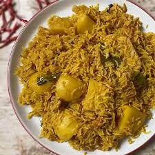

Aloo Pulao

Description
Ingredients
-
Potatoes (Aloo): The heart of Aloo Pulao, potatoes soak up the rich flavours, providing a robust taste and creamy texture. Whether roasted or boiled, they form the base, and their starchy quality ensures that the spices adhere well. Sweet potatoes can be used for a slightly sweeter variation.
-
Rice: More than just a filler, rice in Aloo Pulao is essential for absorbing the wonderful blend of spices. Its light, fluffy texture balances the dish and complements the robustness of the potatoes. Basmati rice, with its long grains and fragrant aroma, can be a luxurious alternative.
-
Oil: Beyond mere frying, oil helps to bloom the spices, unlocking their fullest potential. It forms the base for the spices to mingle and create the flavourful magic that defines the dish. Ghee or coconut oil can be used as alternatives, each introducing its unique flavour profile.
-
Cumin Seeds (Jeera): These tiny seeds offer a smoky, earthy undertone, enhancing the complexity of the dish. Their nutty flavour provides depth without overpowering. Caraway seeds can be used as a replacement for a similar taste experience.
-
Bay Leaf: Often underestimated, the bay leaf infuses a subtle depth and aroma that adds a layer of sophistication. It’s the background note that you can’t quite place but would miss if left out. Dried thyme could be a distant alternative but use it sparingly.
-
Cloves (Laung): Cloves introduce a warm, sweet, and aromatic essence. They contribute to the soul-warming quality of Aloo Pulao. Star anise, though a bit more robust, can be used as an alternative to achieve a similar flavour profile.
-
Black Cardamom: The smoky, menthol characteristics of black cardamom introduce a complex flavour. It adds a touch of intrigue and mystery. Green cardamom, though milder, can be used as a substitute.
-
Peppercorn: Peppercorns bring the heat, a sharp spicy kick that awakens the palate. It complements the warmth of the other spices. White pepper or ground pepper can work as alternatives but with slight variations in flavour.
-
Cinnamon: This beloved spice adds warmth and a touch of sweetness. Its aromatic quality enhances the richness of the dish. Nutmeg can be an alternative, providing a similar spicy-sweet profile.
-
Green Chillies: The spicy punch that keeps you coming back for more. Green chillies add freshness and excitement to Aloo Pulao. Jalapenos or serrano peppers can be great substitutes if desired.
-
Ginger & Garlic Paste: A classic duo, ginger and garlic provide zest and warmth. They form the foundation of flavour, where everything else builds upon. Freshly grated ginger and garlic can replace the paste, with a fresher note.
-
Onions: Onions lend a caramelized sweetness when browned. They create a flavour bridge that ties everything together. Shallots or red onions can be used for slightly different nuances.
-
Tomatoes: These bring tanginess and juiciness to the dish. Their acidity balances the flavours, providing a roundness. Tomato puree or canned tomatoes can fill in, depending on the desired texture.
-
Spices: Salt, turmeric, chilli powder, and garam masala are essential for balancing and enhancing all other flavours. While their alternatives vary, they must align with the flavour palette of the dish.
Steps
-
In a bowl cover the rice completely with cold water and leave to soak for at least 30 minutes
-
Whilst the rice is soaking in a pot heat up the oil until hot then add the whole spices and sauté for 1-2 minutes until fragrant
-
Add the ginger paste, garlic paste, and green chillies then cook for another 1-2 minutes
-
Add the finely sliced onions and cook on medium for 6-8 minutes until browned – add a few tablespoons of the water to allow the onions to release some colour then cook for another 1-2 minutes
-
As the onions are cooking chop the potatoes into chunks then add into the pan and cook for 4-5 minutes
-
Add the tomatoes and cook for 3-4 minutes until softened.
-
Add the salt with the rest of the spices then cook for 4-5 minutes
-
Add the water then bring it to a gentle boil
-
Drain the rice then add into the pan and stir before increasing the heat to high then cook for 6-8 minutes
-
Cook for 2-3 minutes on medium heat until most of the water is absorbed
-
Reduce the heat to low then cover and cook for 15 minutes
-
Serve with mint raita and enjoy!